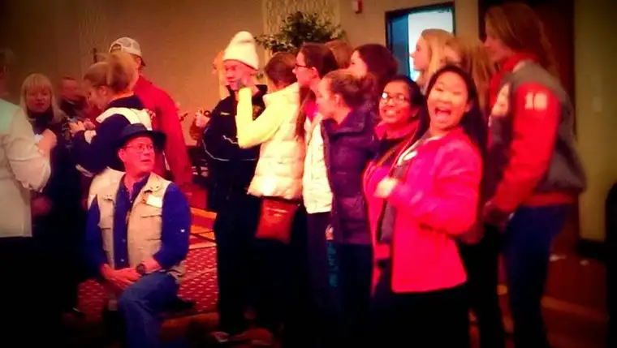

Today was all about tears.
{kind=link}
It started when, midday, I sat on my bed, closed my eyes, and started talking to God. My prayer quickly became a pouring forth of many things I’ve been holding in my heart — some worried things but mostly things for which I am deeply grateful.
It doesn’t take much to get my faucet running, especially if I am in silence and connected to that place within and without that brings me to my essence and the essence of God. In those fragile moments when I know I am safe with God, emotions come easily.
Eventually I had to end my prayer because my feelings threatened to overpower. This might seem dramatic but it’s what was. I have so much gratitude in my heart I can barely carry it by myself.
Does this seem strange? Perhaps I feel so deeply in such times because I’ve experienced other times when I’ve felt cut off from the source of life. I know it was all my doing but the fact remains that I have not always had such clear access to God’s love and light.
Though my tears stopped for a while, a couple hours after my prayer session, I attended an evening banquet with a friend. The event is hosted yearly by our Catholic radio station to garner support and provide for the station’s future. And it’s not just one station but many popping up “like mushrooms” (as our guest speaker noted) all over the state of North Dakota. It’s incredible. We’ve tapped into something big here and it’s making a profound difference in the lives of many Catholics and other believers, too.
I shouldn’t have been surprised, but not long after arriving at the banquet with my friend, tears appeared again — this time from the station’s executive director. Equipping the whole state with radio to enliven the soul is no small task, but he’s doing it. Not only that but it had been an emotional day, beginning with a daughter going into the hospital for emergency surgery. And yet somehow, God had carried him through all of that, and there he was, having survived it, and thanking everyone for how they’d come to his rescue to lift his burden.
It was obvious this was not so much a business as a family, and that he was, like I had been earlier, simply overwhelmed by gratitude.
Then the guest speaker, Catholic convert Steve Ray, got up to share his conversion story. He also had to stop in the middle of his talk to collect himself. He’d been sharing about deciding to become Catholic after a lifetime of being passionately anti-Catholic; specifically, the moment when his teen daughter, after crying in her room over a letter he’d written explaining the conversion, told him the kids had been convicted and would be joining the ship, too.
Later, he spoke of other tearful times, including the day he stepped foot in a Catholic Church for the first time, and realized that in looking at the priest he was witnessing “an apostolic man,” someone who knew someone who knew someone who knew…the first pope. It’s an unbroken line traced all the way back to Peter himself, and it’s one of the reasons I stayed Catholic after some floundering in early adulthood — this realization that Peter was the first pope.
All these tears culminated in my realizing a life of passionate faith and tears go together. The kind of faith that brings us up close and personal with the living God can’t help but bring one to tears; not tears of sadness but overwhelming joy.
I had them. The radio director had them. And the presenter had them. And as I sat there listening to the presentation of one who had come back to life, there they were again, dripping down my cheeks. And I just let them.
Tears can be a little scary at times. When we are really crying, we’re also a little out of control. But they tell us something about ourselves and where we’re at. They remind us we are not frozen and numb but enlightened and alive.
Most of my tears these days are tears of joy and gratitude. For that reason, I imagine heaven as being a place full of crying people with tears everywhere, rivers of them; tears in abundance that say, “I love and I am loved.”
God, help me to always feel this deeply. Don’t let me ever take for granted this blessed connection I have with you. Remind me of my need for you always so that my tears will never run dry. Amen.
 |
| Shanley High School students “mobbing” Catholic convert Steve Ray |
{kind=link}